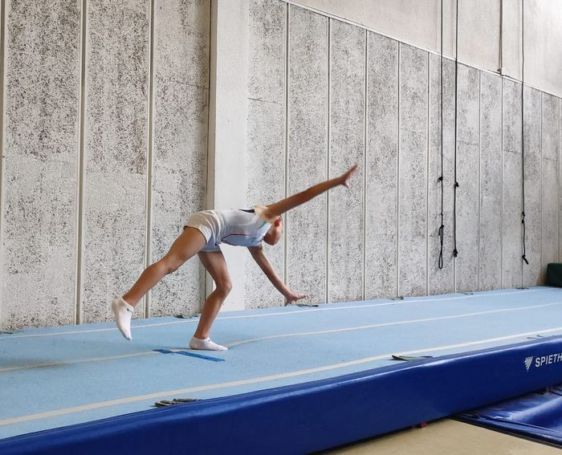

Nor gara
Kluba
Buelta ta Saltoka Gimnasia Kluba Bilboko irabazi asmorik gabeko kirol kluba da, tranpolineko gimnastikari eskainia.
Buelta ta saltoka
Gure izenak dena esaten du: bueltak eman eta saltoka ibili, hori da egiten duguna. Tranpolinean, minitranpolin bikoitzean eta tumblingean entrenatzen eta lehiatzen gara.
Kluba 1989an sortu zen Santurtzin, eta 2012tik du gaur egungo izena. Euskadiko Kirol Erakundeen Erregistroan dago inskribatuta, CD0001572 zenbakiarekin, eta indarreko estatutuak 2026ko maiatzean onartu ziren.

Historia
Santurtzitik Txurdinagara
Buelta ta Saltoka ez zen izen honekin jaio. Santurtziko udal gimnastika-eskola izan zen hasieran, eta urteen poderioz gaur egungo tranpolin-kluba bihurtu zen.
- 1989
Santurtzin jaioa
Kluba Club Escuela Municipal de Gimnasia Santurce izenarekin sortu zen. 1989ko otsailaren 22an Euskadiko Kirol Erakundeen Erregistroan inskribatu zen, gaur egun ere duen zenbakiarekin (CD0001572), eta ekainean Espainiako Gimnasia Federazioak haren estatutuak erregistratu zituen.
- 2012
Izen berria, etapa berria
Entrenamendu-egoitza aldatu zenean, eta erakundeek hala eskatuta, klubak Santurtziko udal eskolaren izena utzi zuen. 2012ko azaroaren 14an, batzarrak estatutuak euskal araudira egokitu zituen eta Buelta ta Saltoka Gimnasia Kluba izena hartu zuen; lagunentzat, Saltoka.
- 2019
Euskadiko Kopa, etxean
Ekainaren 8an, tranpolineko II. Euskadiko Kopa eta Euskadiko Txapelketa antolatu genituen Bilbon, Euskadiko Gimnasia Federazioarekin eta Bilbao Kirolakekin batera.
- 2021
Munduko Txapelketa Bakun
Mikel Mardones, Espainiako 21 urtez azpiko txapelduna, Bakuko Munduko Txapelketan lehiatu zen, minitranpolin bikoitzean.
- 2022
Sofiara
Marta López Moreno Txurdinagako sototik Sofiako Adin Taldeen Munduko Txapelketara iritsi zen.
- 2024
Zuzendaritza berritua eta Espainiako Txapelketa
Apirilean Zuzendaritza Batzordea berritu zen, eta maiatzean Iruñeko Nafarroa Arenan jokatutako Espainiako Txapelketan lehiatu ginen.
- 2025
Munduko Txapelketa Iruñean
Oihan Ruiz 12.a izan zen haur mailan Nafarroa Arenan jokatutako Adin Taldeen Munduko Txapelketan.
- 2026
Podiumak, Munduko Txapelketa eta estatutu berriak
Oihan Ruiz Espainiako txapeldunorde izan zen minitranpolin bikoitzean haur mailan, eta Nanjingeko Adin Taldeen Munduko Txapelketarako sailkatu zen. Maiatzean 2023ko euskal kirol-legera egokitutako estatutuak onartu genituen, eta urrian webgune hau estreinatu genuen, euskaraz eta gaztelaniaz.
Bazkideena den kluba
Bazkide guztiek osatzen duten Batzar Nagusia da klubaren organo gorena: Zuzendaritza Batzordea aukeratzen du, kontuak onartzen ditu eta klubaren norabidea erabakitzen du. Pertsona bakoitza klubaren parte aktibo sentitzea eta zer ekar dezakeen jakitea nahi dugu.
Zer bilatzen dugu
- Gimnastika sustatzea eta praktikatzea, batez ere tranpolina.
- Gimnasta bakoitza bere mailan lehiatzeko prestatzea, lehen lehiaketatik Espainiako Txapelketara arte.
- Jarduerak, ikastaroak eta lehiaketak antolatzea.
- Emakumeen kirola sustatzea eta, gure baliabideen arabera, desgaitasuna duten pertsonen kirola.
Nola entrenatzen dugu
Denboraldi bakoitza prestakuntza fisikoko aurredenboraldi batekin hasten da, ezinbestekoa tranpolinaren kolpeak jasateko. Gero teknika eta elementu berriak lantzen ditugu, eta intentsitatea egokitzen dugu lehiaketak hurbildu ahala.
Gure balioak
Kirola balioen eskolatzat hartzen dugu: talde-lana, ahaleginaren kultura, elkartasuna, arauekiko errespetua eta osasunaren zaintza. Emakumeen eta gizonen berdintasunaren alde egiten dugu, eta euskara eta gaztelania erabiltzen ditugu.